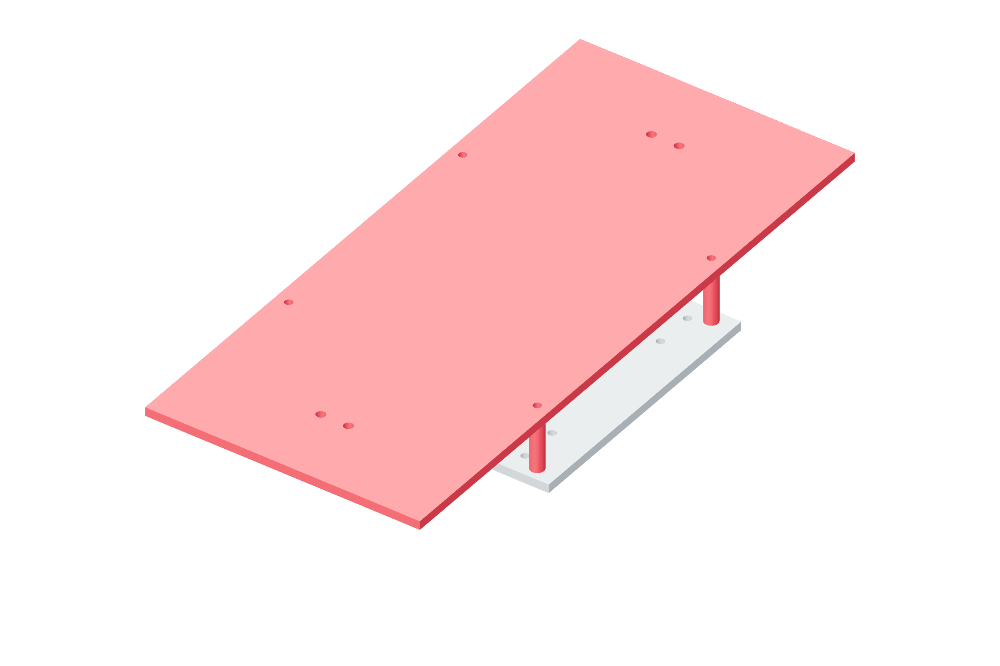

Structure / Y65 / 179
Build the raised Y deck
Four 40 mm metal spacers leave room for the X transmission. The Y bed is rotated 90° relative to X.
Add1 y-bed · four 40 mm metal tube spacers / 10 mm OD · four M5 × 70 through-bolts, washers and locking nuts
Tools / setup4 mm hex · 8 mm wrench · square

- Place the four narrow metal spacers on the X carriage’s 180 × 180 mm mounting pattern, at X/Y = ±90 mm.
- Lay the Y bed on the spacers with its rail direction perpendicular to X.
- Start all four through-bolts; place washers under heads and nuts.
- Seat opposite corners progressively. Check that all four spacers remain square and supported.
Ready when
Every spacer bears on both plates and each locking nut has at least two full threads beyond it. A floating spacer or short bolt weakens the raised deck. Correct the metal stack or bolt grip before installing the Y rails.